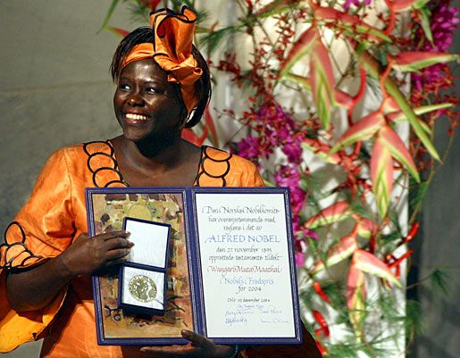

About Her

Professor Wangari Maathai was born on 1st April 1940 in Nyeri, Kenya. She was a scientist, an environmentalist and a human rights activist. She was the first woman in East and Central Africa to get a PhD.
I admire her because she showed that one person can change a whole country. She started with a small idea of planting trees and it grew into a big movement.
Timeline of Her Life
| Year | Event |
|---|---|
| 1940 | Born in Nyeri, Kenya |
| 1971 | Got her PhD from the University of Nairobi |
| 1977 | Started the Green Belt Movement |
| 2004 | Won the Nobel Peace Prize |
| 2011 | Passed away in Nairobi |
Her Achievements
- Founded the Green Belt Movement
- First African woman to win the Nobel Peace Prize
- Member of Parliament and Assistant Minister for Environment
- Fought to protect Uhuru Park and Karura Forest
Why she inspires me
- She was brave
- She cared about nature
- She helped women
Her Words
When we plant trees, we plant the seeds of peace and seeds of hope.
- Wangari Maathai